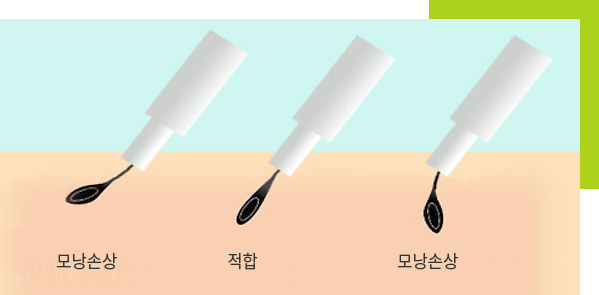
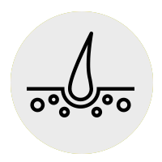
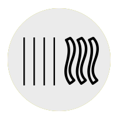
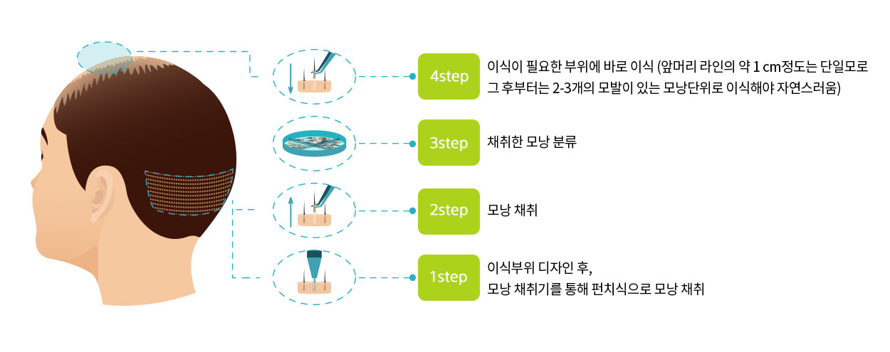

- 
-
비절개이식 FUE이란?
흉터없는 모발이식 또는 다이렉트(FUE:Follicular Unit Extraction)이식은 절개 이식(스트립 Fuss:Follicular Unit Strip Surgery) 이식과는 달리 뒷머리에서 모발을 채취할 때 절개가 필요 없고 필요한 굵기와 필요한 종류의 모발만을 선택적으로 미세한 모근 채취기(Follicular Unit Extractor)를 이용, 채취하여 이식하는 방법입니다.
그러나 그림에서처럼 FUE 채취과정이 한올 한올씩이다 보니 채취관에 의해 모낭이 다치는 경우가 필연적으로 발생합니다. 물론, 채취관을 큰 것을 쓰면 덜 하겠지만 그러면 흉이 커지게 되고 큰 관에 의해 남은 두피의 모낭이 다칠 가능성이 있는 단점이 있습니다.
나에게 맞는 모발이식 수술은?
-
1 두피탄력도
절개식 : 탄력도 높음 / 선상흉터
비절개식 : 탄력도 낮음 / 흉터민감 -

2 후두부 모발밀도
절개식 : 모발밀도 높음 / 선상흉터
비절개식 : 모발밀도 낮음 / 흉터민감 -

3 모발형태(곱슬 or 직모)
절개식 : 심한 곱슬 / 선상흉터
비절개식 : 직모 / 흉터민감
수술 과정
비절개이식 FUE 수술 과정
FUE 장점/적용대상
FUE 장점
| 내용 |
|---|
수술 후 봉합과 실밥제거가 필요없어 통증이 적고 일상생활에 불편함이 없습니다. |
필요한 모발만을 채취할 수 있습니다. |
절개를 하지 않기 때문에 상태를 따라 여러번 단계를 나누어 시술할 수 있습니다. |
과거에 모발이식 후 뒷머리가 당겨서 두피를 채취하기 어려운 경우에도 추가로 모발을 채취할 수 있습니다. |
마취를 한 후 통증이 거의 없어 영화나 음악을 감상하며 시술 받을 수 있습니다. |
FUE 적용대상
| 내용 |
|---|
두피의 흉터로 모발이 없어 고민하시는 분 |
뒷머리가 짧아서 절개를 할 경우 흉터가 보일까봐 고민하시는 분 |
2차 또는 여러 번의 수술로 두피 절개가 어려우신 분 |
수술에 대한 두려움과 거부감이 있으신 분 |
-
탈모닥터
032-327-4242
경기도 부천시 부일로205번길 26
대명엔스빌 1차 303호 -
진료시간
평일 : AM 10 :00 ~ PM 7 : 00
점심 : PM 12:00 ~ PM 01:00
목요일 : AM 10 :00 ~ PM 9 : 00 (야간진료)
토요일 : AM 9:00 ~ PM 01:00
※ 일요일, 공휴일은 휴진입니다.
-
오시는 길